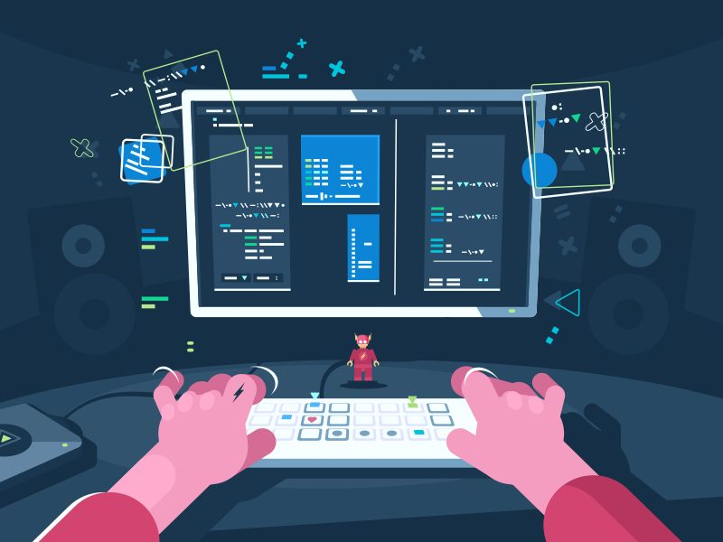

Выделяют 5 основных сфер в IT:
- Программирование
- Машинное обучение
- Кибербезопасность
- Дизайн
- Тестирование
на тему: "Работа в IT: возможности и вызовы"
IT (читается как "ай-ти") — это аббревиатура от английского Information Technology, что в переводе означает информационные технологии.
В широком смысле это все процессы и методы, связанные с созданием, хранением и передачей информации.

Это процесс написания инструкций для компьютера на специальных языках (Python, Java, C++). Его суть — решение задач через автоматизацию процессов.
Обучение алгоритмов, которые не просто исполняют команды, а учатся на данных. Так создаются рекомендательные системы и чат-боты.
Это защита систем, сетей и данных от цифровых атак и кражи. Специалисты ищут уязвимости в коде, отражают хакерские атаки и выстраивают «цифровые крепости», чтобы обеспечить конфиденциальность информации.
Проектирование внешнего вида и логики работы цифровых продуктов. UI (User Interface) отвечает за эстетику (цвета, кнопки), а UX (User Experience) — за удобство: чтобы пользователь интуитивно понимал, куда нажать.
Тестировщики (QA-инженеры) ищут ошибки (баги), проверяя соответствие программы ожиданиям пользователя. Они имитируют различные сценарии работы, чтобы найти и исправить дефекты до того, как продукт выйдет в релиз.
IT — это "нервная система" современного мира.
Подведем итог: Подростки все чаще выбирают IT, так как эта индустрия дает редкий шанс совместить самовыражение с высоким заработком. Это сфера без жестких рамок и бюрократии, где результат ценится выше возраста или регалий. Благодаря доступности инструментов, запустить собственный проект и получить первое признание можно задолго до окончания школы.Я так же собираюсь связать свою жизнь с этой сферой. Именно поэтому я решила написать сайт на уже знакомых мне языках HTML/CSS. Еще я использовала ранее изученное мной приложение Figma для создания макета этого сайта. Помимо html и css, я понемногу изучаю другие языки, такие как: python, c#, c++ ; а так же различные игровые движки: Unity, Unreal Engine, Roblox Studio.